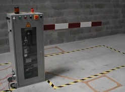

Cette page est une publicité pour le Lycée Lucie Aubrac de Pantin
Dans ce chapitre, nous vous présenterons les filières scientifiques et technologiques du lycée.
Les Sciences de l'Ingénieur sont un enseignement spécifique du baccalauréat qui mobilise des compétences multiples afin d'aborder une démarche scientifique et technologique dans l'étude, la conception et la réalisation des systèmes pluritechniques répondant aux besoins de l'homme.
Le Bac STI2D met l'accent sur les démarches d'investigation et de projet, les études de cas et les activités pratiques, pour acquérir des compétences et des connaissances scientifiques et technologiques polyvalentes liées à l'industrie et au développement durable.
| Serrure biométrique | Barrière automatique |
|  |